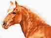

VIBY
i gamla tider
VIBY
i gamla tider
Dokumentation till Hans Månssons och Sven-Arne Ströms redogörelse
vid sammankomsten den 20 september 2005 rubricerad
Soldater och soldattorp
När Ni hör talas om indelta soldater och dragoner får väl de flesta av Er tankarna på ”Rasken” och Sven Wollter. Denna välgjorda TV-serie, efter Wilhelm Mobergs roman med samma namn, speglade livet för en knekt på 1800-talet. Dock inte i Skåne som med sina tättbefolkade byar gav knektarna möjlighet, att bo var de själva önskade. Kravet att vid inkallelse och övningar snabbt vara på plats var ju lätt att uppfylla även om man valt att bo i grannbyn. Det var väl kanske en önskan att leva sitt eget liv och ej underordna sig någon rotebonde eller rusthållare.
När Sven-Arne och jag konstaterade detta blev vi väldigt förvånade och det gav oss också mycket huvudbry. Ryttartorpen i Håslöv är trots allt väl dokumenterade och det ena vid Kvarnäsvägen har överlevt ”Laga Skifte” och andra prövningar. När det gäller Viby By tvingadess vi konstatera att inga spår av torpen fanns i d e annars detaljrika skifteshandlingarna från 1836. I ”Byalådan” fanns för övrigt jordeboksprotokoll över alla socknens gårdar med ”Hemmanstal” inklusive räntor och vilka regementen dessa var tilldelade.
För att få perspektiv på soldaternas förhållanden, skall Ni se att 1800-talet efter freden i Fredrikshamn 1809 var en ganska behaglig tid för en soldat när det gäller risken att komma i strid. Detta kan vi nu konstatera i efterhand. Värre var det tidigare under försvenskningen av Skåneland och de ständiga krigen med Danmark. Risken var också stor att skickas utomlands till våra provinser andra sidan Östersjön under lång tid.
Denna redovisning har därför som syfte att i kronologisk ordning redogöra för en del viktiga händelser med början när Skåne blev svenskt. Trots ansträngningar att göra detta i en kort version märker Ni snart att så inte blev fallet.
Rusthållar-systemet
När ni klickar på bilderna nedan får ni upp en förstoring. Om ni sedan klickar även på denna kommer det upp ett verktyg som gör det möjligt att få en ytterligare förstoring
|
|
|
|
|
|
|
|
|
|
|
|
|
|


Dragoner i Gustav Adolfs socken
vid 1880 års inmönstring
Torp nr 0066 Viby 8
Rusthållare: Mantal: Dragon: Född: På torpet från år:
Sven Abrahamsson 3/8 Carl Olin.*) 18521013 1874
Sven Åkesson 1/4 *) f. Johansson
Erik Mårtensson 1/4

Möjligen kan detta hus – ”Fristedts”- varit ett dragontorp
Hästen,
 -
svart med bläs – stod hos Anders Mårtensson
-
svart med bläs – stod hos Anders Mårtensson
Dragoner genom åren på rusthåll, Viby 8:
Namn: Född: På rusth. mellan år: Övrigt:
Jeppe Abrahamsson ? 1709-1710
Håkan Åke Nyman 1685 1710-1716
Johan Holmström f. Persson 1691 1716-1727
Håkan Widberg 1703 1727-1760
Jeppa Rafsten 1737 1760-1767
Jeppa Wistedt? (Widstedt)? 1747 1767-1790 Död 1790
Per Wistedt? (Widstedt)? 1766 1790-1815
Sven Orrgren 1788 1815-1841
Per Palm 1819 1841-1874
Carl Olin f. Johansson 1852 1874-1883
Anders Berlin f. Jönsson 1864 1883-1889
Erik Orrgren f. Svensson 1871 1889-
Torp nr 0065 Viby 6

Möjligen kan detta hus – Orrgrens - varit dragontorpet på Viby 6
Rusthållare: Mantal: Dragon: Född: På torpet från år:
Sven Abrahamsson 1/4 Jöns Nyström 18340717 1856
Lars Westesson 1/8
Nils Hansson 1/8
Hästen, - ett brunt sto – stod hos Abraham Svensson
Dragoner genom åren på rusthåll, Viby 6:
Namn: Född: På rusth. mellan år: Övrigt:
Per Fiskenfelt f. Håkansson 1687 1709-1713
Pehr Maldo f. Knutsson 1694 1713-1737
Gudmund Berg ? 1737 Död 1737
Sone Winberg 1718 1737-1762
Nils Önberg 1737 1762-1768
Per Nyström 1742 1768-1790
Måns Nyström 1768 1790-1816
Per Nyström f. Persson 1792 1816-1856
Jöns Nyström f. Johansson 1834 1856-1887
Olof Nyström f. Persson 1868 1887-
Torp nr 0068 Håslöv 15

Där Johannehem ligger idag- låg detta torp
Rusthållare: Mantal: Dragon: Född: På torpet från år:
Nils Jönsson 3/4 Erik Tulin*) 18581218 1879
Anders Nilsson 1/8 *) =född Persson
Valdemar Persson 1/8
Hästen,

- Fox med bläs – stod hos Nils Jönsson
Dragoner genom åren på rusthåll, Håslöv 15:
Namn: Född: På rusth. mellan år: Övrigt:
Torsten Skönberg f. Bodelsson 1687 1709-1719
Jöns Fielik 1690 1719-1727
Per Torberg f. Sherberg 1704 1727-1737
Samuel Lindberg? Lundsten? 1716 1737-1761
Måns Lindberg 1731 1761-1763
Måns Malmberg 1735 1763-1791
Nils Risberg 1768 1791-1815
Sven Stoltz 1788 1815-1829
Per Ring 1794 1829-1841
Anders Ljungström f. Jönsson 1820 1841-1872
Håkan Håkansson 1857 1872-1879
Erik Tulin f. Persson 1858 1879-1885
Nils Lindahl f. Persson 1857 1885-1892
Gustav Lundgren 1875 1892- Värvad
Torp nr 0067 Håslöv 1

Strömbergs, numera ägt av Kerstin och Kurt Melin, - ett av dragontorpen.
Rusthållare: Mantal: Dragon: Född: På torpet från år:
Sven Andersson 3/8 Sven Holmberg*) 18280715 1850
Anders Nilsson 1/4 *) =född Nicklasson
Ola Andersson 1/4
Hästen,
 -
svart valack med bläs – stod hos
Ola Andersson
-
svart valack med bläs – stod hos
Ola Andersson
Dragoner genom åren på rusthåll, Håslöv 1:
Namn: Född: På rusth. mellan år: Övrigt:
Jöns Svart f. Ohlsson 1687 1709-1713
Lars Malmberg 1688 1713-1738
Per Malmberg 1715 1738-1759 Död 1759
Jöns Dun 1737 1759-1763
Per Wästedt ? 1763-1764
Ola Hammarlund 1731 1764-1789 Död 1795
Nils Åström 1763 1789-1807
Sven Nyström 1780 1807-1819
Lars Strömberg 1795 1819-1832 Död 1852
Per Frid 1808 1832-1844
Nils Rask f. Bondesson 1815 1844-1850
Sven Holmberg f. Nicklasson 1828 1850-1883
Per Åström 1866 1883-
Några dragoner och soldater som bott en längre tid i Gustav Adolf men haft sitt rusthåll på annan ort:
Namn: Född: Boende: Rusthållsort: Övrigt:
Nils Walter 1807 Håsl. 15 Hammar 2,3 Dragon
Jonas Lilja 1813 Håsl. 10-12 Balsby 2 Dragon
Lars Gren 1813 Håsl. 15 Råbelöv 9 Soldat
Nils Berg 1814 Hås. 10-12 Hammar 1 Dragon
Nils Palm 1819 Håsl. 1 Linderöd Dragon
Jöns Österblad 1820 Håsl. 13 Örkened Dragon
Lars Rinaldo 1826 Viby 4 Ö. Ljungby Soldat
Bengt Stål 1833 Håsl. 10-12 Vånga Dragon
Jöns Lind 1834 Håsl. 4 Gualöv Dragon
Jöns Jarl 1837 Håsl. 15 Åraslöv 7 Dragon
Ola Ström 1842 Håsl. 8 Gualöv 3 Dragon
Nils Möller 1847 Håsl. 15 Råbelöv 3 Soldat
Ola Ljung 1849 Håsl. 1 G. Köpinge Dragon
Nils Carlberg 1856 Viby 8 Hanaskog 9 Soldat
Carl Lind 1865 Viby 1 Hammar 2,3 Dragon
Anders Lindvall 1873 Håsl. 15 Uddarp 1 Dragon
Nils Rosqvist 1880 Viby 5 Värvad Dragon
Dragonerna Orrgren
Släkten Orrgren bebodde huset på bilden, torpet på Viby 6, från år1841 till in på 1970-talet.
Inom tre generationer Orrgren fanns fyra dragoner enligt följande:
- Sven (d.ä.)
Född i Maglehem 1788 och kom via Åraslöv till Viby 8 år 1807 och blev dragon för detta rusthåll mellan åren 1815 – 1841. Därefter flyttade han till ovanstående hus på Viby 6 där han dog 1870.
- Nils
Son till Sven född på Viby 8 år 1813. Dragon för rusthåll Legeved 3 mellan åren 1835 – 1853. (Fick efternamnet Alm som dragon).
- Sven (d.y.)
Också en son till Sven – född på Viby 8 år 1827. Bosatte sig med familj i föräldrahemmet, huset på bilden ovan 1850, då han också blev dragon för rusthållet Östad 5 i Näsum - därifrån överförd till rusthållet Gälltofta 2 mellan åren 1862 – 1876. (OBS! Bodde kvar i Viby).
- Erik
Sven d.y. son – född Viby 6 år 1871. (Huset på bilden ovan). Blev Viby 8 siste dragon 1889 – 1901. Ogift – bodde kvar i föräldrahemmet tillsammans med sin syster Anna. Dog 1934.
(Dragonen Erik, var en farbror till den Erik Orrgren som många av oss kommer ihåg. Sistnämnde Erik flyttade in i huset ovan med sin familj, fru Sally och sönerna Hans och Lars, – efter sin faster Anna).
Soldater
NORRA SKÅNES REGEMENTE
Upprättades år 1813 med bland annat följande åläggande:
Att underhålla ständigt manskap äfven i fred, på samma sätt som det öfriga rotehållet i riket.
Regementet är indelt i norra Skåne (Christianstads och Malmöhus län), består af 984 nummer**), hvaraf 183 äro vakanta och indragne till Statsverket på 50 år
(från år 1816-1866), hör till 1:a Militärdistriktet, har N:o 24 vid Infanteriet,
och är fördelat på 8 kompanier.
**) Roten i Håslöv hade nr 26 och roten i Viby nr 120. Den sistnämnda var vakant och indragen till Statsverket fram till 1866.
Till de olika numren rekryterades nu soldater. Till skillnad emot dragonerna, var dessa anställda och avlönade endast genom penninglöner. Således inte med eget torp, hästhållning m.m.
Soldater i Gustav Adolfs socken vid 1881 års inmönstring
Rothåll nr 0026 - Håslöv 4 m fl.
1:a hemmanet i Roten: Soldat: Född: På Rothållet från år:
Håslöv 4 Nils Winqvist*) 18591002 1881
*) född Åkesson
Soldater genom åren på Rothållet:
Namn: Född: På roth. mellan år: Övrigt:
Måns Weberg 1794 1816-1843
Erik Daun f. Persson 1825 1843-1856 Död 1856
Ola Daun f. Persson 1832 1856-1868
Per Ljung f. Nilsson 1868 1868-1881
Nils Winqvist f. Åkesson 1859 1881-1893
Per Stark f. Svensson 1875 1893-
Rothåll nr 0120 - Viby 1 m fl.
1:a hemmanet i roten: Soldat: Född: På Rothållet från år:
Viby 1 Nils Blixt 18440408 1865
Soldater genom åren på Rothållet:
Namn: Född: På roth. mellan år: Övrigt:
Nils Blixt 1844 1865-1891
Nils Dahlberg 1872 1891-
Gratialist = Understöd från pensionskassa
I 1890-års husförhörslängdsserie finns dessa soldater och dragoner med som gratialister.

Soldaten Karl Ström f. Svensson
Norra Skånska Infanteriregementet, Livkompaniet
Född 1864-02-20 i Gustav Adolf
Rothåll nr 0103 - Legeved 2 m fl.
från och med 1886 till och med 1896


(Trumpetarboställe Håslöv 3,7 = nuvarande Rosenbergs)